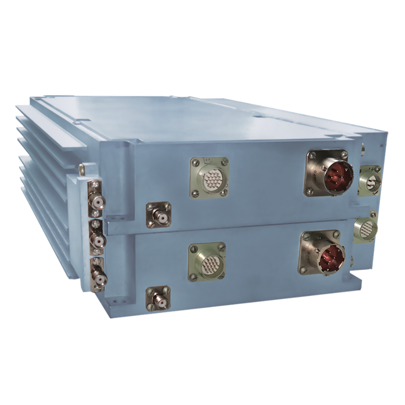

Описание
Предназначен для использования в качестве оконечного усилителя мощности
в сверхширокополосных системах связи и радиолокации.
ШУМ 2х10 включает:
- плавный фазовращатель входного сигнала 0-180o;
- встроенный вторичный источник питания (возможность питания маломощных внешних устройств);
- детектор огибающей входного и выходного сигнала с полосой видеосигнала не менее 20МГЦ на выходе ШУМ;
- аналоговый аттенюатор на входе ШУМ с диапазоном регулировки не менее 35дБ управляемый 0…-3В;
- встроенную защиту от перегрева с блокировкой подачи питания и гистерезисом 2oС;
- обобщенный контроль готовности с выдачей сигнала "авария".
Технические характеристики

| диапазон рабочих частот |
X |
| уровень выходной мощности при Р-1, дБм(Вт), не менее |
38.5-41 (7-12) |
| коэффициент усиления в режиме малых сигналов, дБ, не менее |
30 |
| КСВН вх/вых, не более |
2.0 |
| напряжение питания, В ±10% |
27 |
| ток потребления, А, не более |
3 |
| диапазон рабочих температур, oС |
-55…+80 |
| масса, кг, не более |
6 |
Вернуться к списку продукции